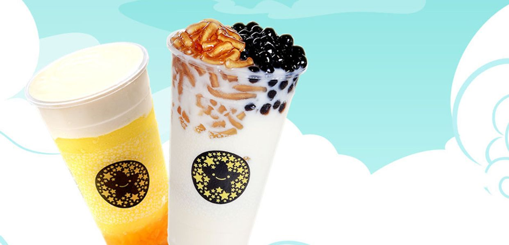
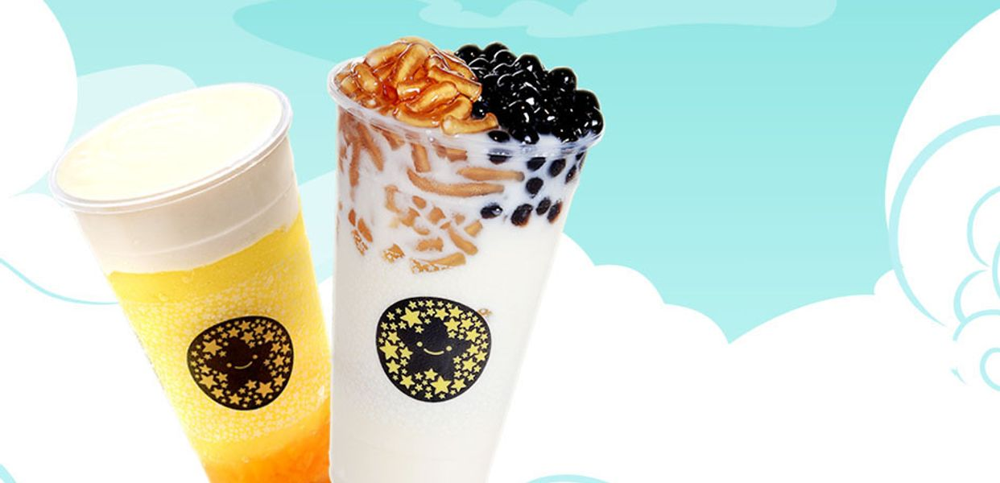

Luôn tâm huyết với việc khai thác nguồn nông sản Việt Nam để tạo ra những ly thức uống tươi ngon, an toàn và giàu giá trị dinh dưỡng, ToCoToCo mở cửa hàng đầu tiên vào năm 2013, mang trong mình lòng đam mê và khát vọng xây dựng một thương hiệu trà sữa thuần Việt, mang đậm hương vị quê hương.ToCoToCo tin rằng thưởng thức một ly trà sữa được pha chế từ trà Mộc Châu, trân châu từ sắn dây Nghệ An hay mứt dâu tằm từ Đà Lạt sẽ là những trải nghiệm hoàn toàn khác biệt và tuyệt vời nhất cho những khách hàng của mình.
Cũng chính từ sự khác biệt đó, thương hiệu ToCoToCo đã có những bước phát triển thần tốc và dần chiếm lĩnh thị trường trà sữa với hơn 200 cửa hàng trải dài trên toàn quốc. Cột mốc năm 2018 đánh dấu ước mơ vươn xa biển lớn của thương hiệu khi ToCoToCo chính thức đặt chân lên nước Mỹ và tiếp nối thành công tại Úc, Nhật Bản, Hàn Quốc, Singapore,…
Hành trình đầy đam mê và tâm huyết này sẽ tiếp tục nhân rộng để lan tỏa những ly trà thuần khiết nông sản Việt đến mọi miền trên Việt Nam và thế giới.
Năm 2013, khởi đầu từ một cửa hàng nhỏ trên phố nhưng luôn tấp nập người qua lại, TocoToco kỳ vọng qua thời gian sẽ mang những ly đồ uống đong đầy niềm vui và hạnh phúc tới tay của nhiều khách hàng trên khắp các tỉnh thành trong nước. Bên cạnh đó, ước mơ “Vươn xa biển lớn” của thương hiệu vẫn hàng ngày được nuôi dưỡng.
Năm 2014, chỉ sau một năm gây dựng được niềm tin yêu tư khách hàng, TocoToco đã mở rộng hệ thống cửa hàng lên tới 13 điểm bán. Sau khi đặt chân lên Sài Gòn vào năm 2016, TocoToco tiếp tục mở rộng quy mô với kỳ vọng sẽ trở thành thương hiệu trà sữa hàng đầu Việt Nam. Đặc biệt, trải qua 5 năm phát triển bền vững, năm 2018 là một dấu ấn quan trọng khi TocoToco đã có mặt tại thành phố San Jose nước Mỹ sau nhiều quá trình kiểm định chất lượng nghiêm ngặt, đánh dấu bước ngoặt lớn trong mục tiêu “Vươn xa biển lớn” của thương hiệu. Tính đến nay, TocoToco đã phát triển với hệ thống hơn 200 điểm bán phủ rộng khắp các tỉnh thành trên toàn quốc.
.png) 
